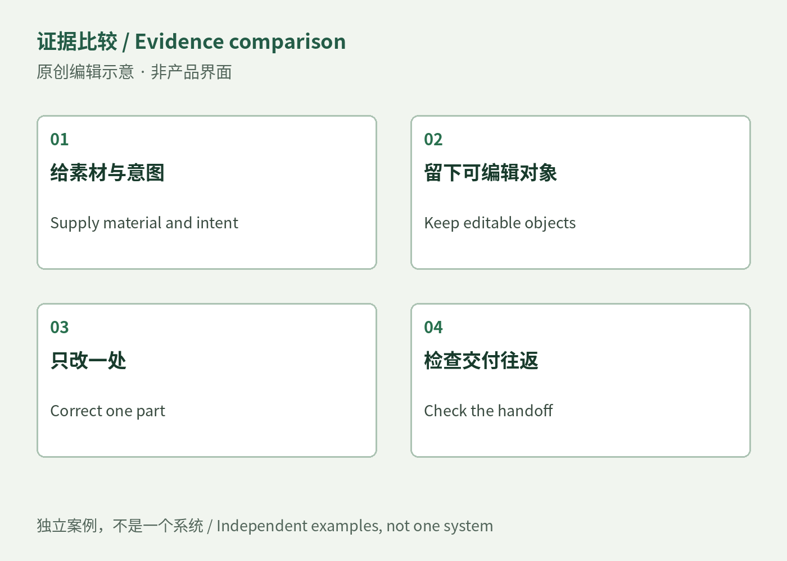

输出对象决定下一步能怎么改
Affinity提供同文件里的多种编辑空间；Edits负责人描述代理通过MCP先组粗剪，再由人继续操作；Illustrator Icon Sheets把结果放成可编辑矢量。共同点不是三者生成同一种内容，而是保留熟悉的修改入口。需要改一个停顿、一笔轮廓或一块文字的人，可以明确指出对象，而不必再次描述全部意图。
可编辑交接 / Editable handoffs · 观察／待验证判断

Affinity提供同文件里的多种编辑空间；Edits负责人描述代理通过MCP先组粗剪，再由人继续操作；Illustrator Icon Sheets把结果放成可编辑矢量。共同点不是三者生成同一种内容，而是保留熟悉的修改入口。需要改一个停顿、一笔轮廓或一块文字的人，可以明确指出对象，而不必再次描述全部意图。
上周Canva Brush已经把局部设计修改作为卖点，因此本周三个案例不能算这个方向的首次出现。反证就在各产品限制里：复杂导入可能丢结构，自动粗剪未必理解叙事，图标仍需放到实际按钮尺寸检查。另一种解释是厂商把AI嵌入既有编辑器，必须遵循原本对象模型，并非发生了新的用户偏好转折。上周也已有可修改生成结果的例子；目前没有相同任务、用户或版本的跨周基线，不能把这些发布相加为增长。
可用同一份小项目先生成，再要求保留大部分内容、只修改一个细节。记录找到目标、修正、导出和协作者打开所需时间，以及是否损坏已经批准的部分。若人仍要重建工程，可编辑的收益没有成立；若修改稳定保留且对方可继续接手，则支持把它用于反复协作的任务。这是验证路线，不是本刊运行过的性能测试。